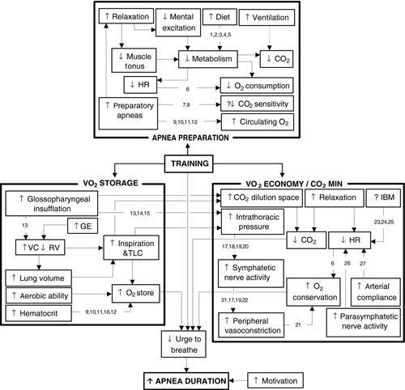
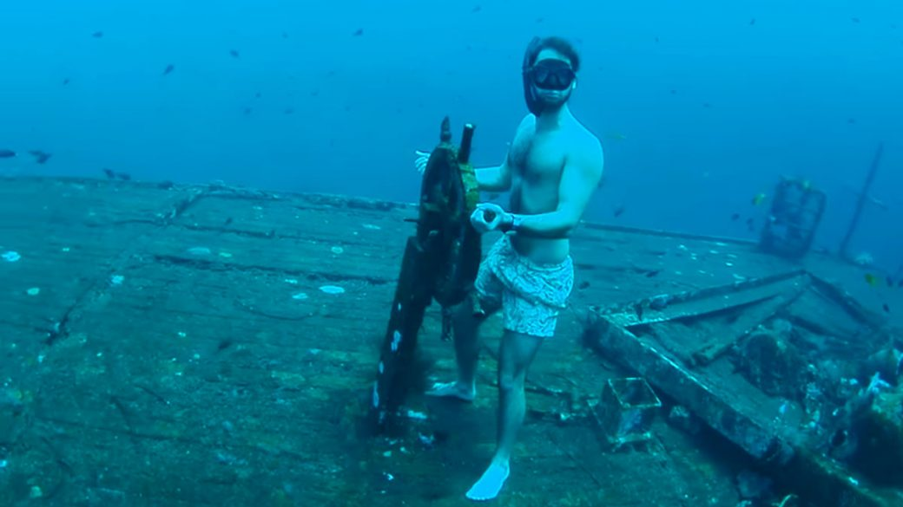
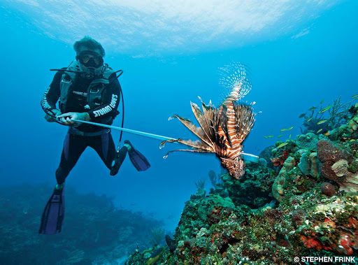

First, a short disclaimer on the dangers of breath holding: Breath holding, especially underwater, is quite dangerous. It is easy to blackout during breath holds, which can easily lead to drowning and ultimately death. If you do decide to do breath holds in water, follow two rules:
Even then, underwater holds should be avoided and replaced by dry land work (still with a partner). Accidents happen to both experienced swimmers and novices alike.
While performing training tables, loss of motor control, blackout, and/or respiratory system damage can occur. Follow three rules to avoid these dangers:
Apnea is technically the act of not breathing, but applying it to sport, apnea is the practice of holding one's breath. There are arguably two disciplines of sport apnea: static (staying still) and dynamic (moving). Since the primary application of apnea is freediving, the two terms will be used interchangeably, except in certain instances.
Apnea has been in practice for hundreds of years. With no type of SCUBA technology available (The Silent World details the advent of SCUBA technology, review here), people had to resort to holding their breaths to reach the bottom of the body of water, whether it be to hunt or scavenge from a shipwreck.
In 1992, the International Association for the Development of Apnea (AIDA (acronym based on French spelling)) was formed in France to promote the sport of apnea, both recreationally and competitively. Another organization, the World Underwater Organization (CMAS (acronym based on French spelling)), encompasses all underwater training, where freediving is a small subset of the whole.
The AIDA recognized disciplines are as follows:
More information on the different disciplines can be found here.
Current records (as of 26 April 2020) are as follows:
| Discipline | Men | Women |
|---|---|---|
| NLT | 214 m | 160 m |
| VWT | 146 m | 130 m |
| CWT | 130 m | 107 m |
| CNF | 102 m | 73 m |
| FIM | 125 m | 98 m |
| DYN | 300 m | 257 m |
| DNF | 244 m | 191 m |
| STA | 11:35 min | 9:02 min |
The paper Physiology of static breath holding in elite apneists is one of the most comprehensive studies done on the physiology of static apnea. This paper should be read to best understand the science and physiology behind apnea.
Breath hold time is a function of two characteristics:
The mammalian diving response/reflex (MDR) has a large effect on the hold time. When submerged in water, the body will optimize its oxygen use by directing it to the heart, brain, and other tissues requiring oxygen, rather than "wasting" the precious gas on tissue that doesn't need it for the time being.
Once the water is detected by the central nervous system (CNS) (generally via the nose), both peripheral vasoconstriction and bradycardia occur, narrowing the blood vessels within the limbs and slowing the heart rate, respectively. Blood pressure is calculated by multiplying the cardiac output and vascular resistance, so when output decreases (bradycardia) and resistance increases (vasoconstriction), blood pressure will remain approximately constant, preventing hypertension.
Heart rate correlates directly with facial temperature.
Peripheral vasoconstriction and bradycardia still occur without submersion into water (dry apnea), but to a lesser degree.
All that information is nice, but how does one actually get better at holding their breath? What physical adaptations take place within the body to allow for longer hold times?
Bain et al. 2018 provides an excellent figure (see below) that shows the pathways towards longer breath holds.
The maximum hold procedure will be performed lying down and is as follows:
| Date | Time (min) |
|---|---|
| t0 (19 April 2020) | 2:00 |
| t0 + 30 days | 2:40 |
| 6-week break | N/A |
| t0 + 90 days | |
| t0 + 120 days |
This procedure was also conducted on a trained runner who recently ran a 1:20:00 hr half-marathon (21.1 km, 13.1 mi) and 5:20 min 1600 m. He had no prior breath holding experience. His maximum hold was 2:30 min.
The following CO2/O2 training tables will be recalculated after the t0 + 30/60/90 day retests.
The training to improve the maximum hold will consist of two sessions per week: one CO2 session and one O2 session. Each session's individual hold times will be increased by 0:03 min (3 sec) on a weekly basis.
The CO2 session holds are constant at 50% of maximum breath hold with decreasing recovery intervals. This session is meant to improve the body's handling of CO2 accumulation. As the recovery period decreases, excess CO2 will still be present. There are two types of progressions:
| Hold (%) | Recovery (min) |
|---|---|
| 50 | 1:45 |
| 50 | 1:30 |
| 50 | 1:15 |
| 50 | 1:00 |
| 50 | 0:45 |
| 50 | 0:30 |
| 50 | 0:15 |
| 50 | N/A |
The O2 session holds begin at 40% of maximum breath hold and end at 75% with constant recovery times of 2:00 min. There is only one type of progression:
| Hold (%) | Recovery (min) |
|---|---|
| 40 | 2:00 |
| 45 | 2:00 |
| 50 | 2:00 |
| 55 | 2:00 |
| 60 | 2:00 |
| 65 | 2:00 |
| 70 | 2:00 |
| 75 | N/A |
It is said that strength can be maintained by one training session per week. What about breath holding?
In order to document this, after the 90 days are complete, abbreviated CO2 and O2 sessions will be performed once per week with the following structure:
| Hold (%) | Recovery (min) |
|---|---|
| 50 | 1:00 |
| 50 | 0:45 |
| 50 | 0:30 |
| 50 | N/A |
| Hold (%) | Recovery (min) |
|---|---|
| 50 | 2:00 |
| 60 | 2:00 |
| 70 | 2:00 |
| 80 | N/A |
Maximum breath hold will then be retested at 30, 60, and 90 days to check for progression, regression, or stagnation.
| Date | Time (min) |
|---|---|
| t0 (17 August 2020) | |
| t0 + 30 days | |
| t0 + 60 days |
The maximum hold procedure will be performed as follows:
| Date | Distance (min) |
|---|---|
| t0 (xx xx 2020) | |
| t0 + 30 days | |
| t0 + 60 days | |
| t0 + 90 days |
The training to improve the maximum distance walk will consist of two sessions per week: one CO2 session and one O2 session. Each session's individual walk times will be increased by 0:03 min (3 sec) on a weekly basis. The walking will be done at a constant, easy pace.
The CO2 session holds are constant at 50% of maximum breath hold with decreasing recovery intervals.
| Hold (%) | Recovery (min) |
|---|---|
| 50 | 1:45 |
| 50 | 1:30 |
| 50 | 1:15 |
| 50 | 1:00 |
| 50 | 0:45 |
| 50 | 0:30 |
| 50 | 0:15 |
| 50 | N/A |
The O2 session holds begin at 40% of maximum breath hold and end at 75% with constant recovery times of 2:00 min.
| Hold (%) | Recovery (min) |
|---|---|
| 40 | 2:00 |
| 45 | 2:00 |
| 50 | 2:00 |
| 55 | 2:00 |
| 60 | 2:00 |
| 65 | 2:00 |
| 70 | 2:00 |
| 75 | N/A |
After the 90 days are complete, abbreviated CO2 and O2 sessions will be performed once per week with the following structure:
| Hold (%) | Recovery (min) |
|---|---|
| 50 | 1:00 |
| 50 | 0:45 |
| 50 | 0:30 |
| 50 | N/A |
| Hold (%) | Recovery (min) |
|---|---|
| 50 | 2:00 |
| 60 | 2:00 |
| 70 | 2:00 |
| 80 | N/A |
Maximum walk time will then be retested at 30, 60, and 90 days to check for progression, regression, or stagnation.
| Date | Time (min) |
|---|---|
| t0 (xx xx xxxx) | |
| t0 + 30 days | |
| t0 + 60 days |
The obvious frontrunner, freediving is the reason most people practice breath holding. With longer holds, you can stay under for longer, go farther, and be more comfortable. Most explorations are limited by the breath and ability to withstand pressure (if takes 45 sec to get to the shipwreck, but the diver's maximum hold is 1:30 min, good luck exploring it (but maybe they can get a quick photo for the 'gram)).
With freediving, coral reefs, shipwrecks, pools, and other attractions involving water are much more accessible. Of course, static apnea is only somewhat applicable—freediving needs freediving training, i.e., dynamic wet apnea.
Other applications include:
